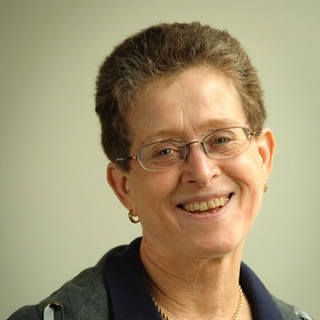

HCII Director
HCII
justine@cs.cmu.edu http://www.justinecassell.com
NSH 3519
(412) 268-4456
Research Areas:
Enabling Technologies, Learning Sciences and Technologies, Social Computing
Haakon Faste
Visiting Assistant Professor
HCII
hfaste@cs.cmu.edu http://www.haakonfaste.com
NSH 3527
(650) 906-4554
Administrative Staff: Rebecca King
Research Areas: Design Research, Enabling Technologies, Social Computing
Assistant Professor
HCII http://kittur.org/
NSH 2504 D
(412) 268-7505
Research Areas: Social Computing

Roberta Klatzky
Professor, Psychology Dept. and Center for the Neural Basis of Cognition
Psychology http://www.psy.cmu.edu/faculty/klatzky/index.html
BH 346C
(412) 268-3151
Research Areas: Enabling Technologies, Human Assistance
Ken Koedinger
Professor
HCII
koedinger@cmu.edu http://pact.cs.cmu.edu/koedinger.html
NSH 3601
(412) 268-7667
Administrative Staff: Jo Bodnar
Research Areas: Learning Sciences and Technologies
Daniel P. Siewiorek
Buhl University Professor of Computer Science and Electrical and Computer Engineering
HCII
(412) 268-2570
Research Areas: Enabling Technologies, Human Assistance
John Zimmerman
Associate Professor
HCII http://www.cs.cmu.edu/~johnz/
NSH 2504F
(412) 608-8181
Research Areas:
Design Research, Enabling Technologies, Human Assistance, Social Computing